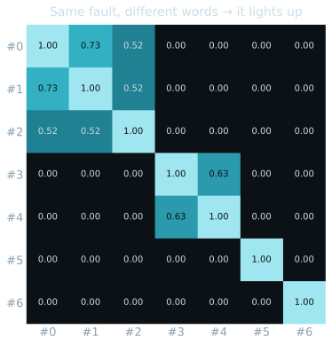
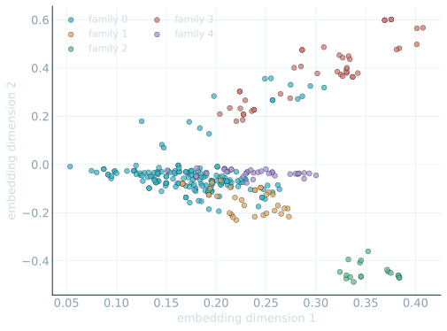

Back from the break · you tell me
Before we build again — what stuck?
The words the machine reads off a note — feature or label? → feature (the input)
- The urgent-vs-routine call it predicts — which one? → label (the answer)
- The one sentence that carried the whole session? → "it learns a pattern from the past"
Room answers first · then I reveal
Predictive AI · Session 02 of 04
02
Text IIstructure nobody labelled.
Past notes — no labels
a hidden pattern
name the families
◷ Open loop still running — where does this AI break?
No answer key this time
Can it group 300 snags nobody ever sorted?
This morning every note had a label. Now none do. No urgent, no routine — just 300 snags and a question: what failure modes are hiding in here, and where will it get them wrong?
◷ This session's loop · the 4pm loop still open underneath
90 seconds · no method yet, just you
No labels now — just group what belongs together.
| # | Maintenance note (verbatim style) | Group? |
|---|
| 1 | "Grinding noise from the accessory gearbox bearing under load." | ? |
| 2 | "Accessory gearbox bearing very noisy under load, grinding." | ? |
| 3 | "Hydraulic oil leaking from the main gear actuator seal." | ? |
| 4 | "Transponder drops off intermittently in flight." | ? |
| 5 | "Loud grinding from the worn accessory gearbox bearing." | ? |
| 6 | "Fluid leak at the main gear hydraulic actuator seal." | ? |
Group by hand · hands up where you disagree on 1, 2 and 5
One new idea · the whole session
It doesn't match words — it scores how similar two notes are.
Similarity
Same fault, different words
"grinding" · "noisy" · "worn gearbox" — scored close to 1. Overlap in meaning, not exact spelling.
Family
The group it forms
Notes that score similar get pulled together — a failure mode nobody labelled, that we name afterwards.
300 snags — no labels
Similarity → families
We name them
Run the cell · your Colab tab
Same fault, different words — and the grid lights up.
No one matched the words. It scored "grinding" and "worn gearbox" as the same failure — a bright off-diagonal block.
Run the RECURRING FAULTS cell · Shift+Enter

Pairwise similarity, 0 → 1 · bright = same fault in different words · offline copy of your Colab output
Room locks a guess on cards · then I reveal
300 snags — how many families emerge?
The honest result · name the clean ones, own the mess
A few families it nailed — and one big catch-all.
- Mechanical · gearboxes, rotors, APU — a clean, tight family.
- Electrical & Avionics · generators, displays, transponders — two more it found alone.
- One big catch-all · leftovers that fit nowhere cleanly — agreement only ≈ 0.22.
No labels went in. A few clean families plus a mess is the honest shape of unsupervised grouping — not a triumph, but real structure for free.

300 snags placed by similarity · colour = the family it assigned · offline copy of your Colab output
I draw the line · you call the score
One straight line to split them — how good can it get?
Cards first: can ONE line split them cleanly? · then I draw
Room locks a guess on cards · then I reveal
Which two families does it mix up?
A new model · it scores 95%
Ninety-five percent on triage — would you sign?
This morning's honest model managed 88, and we were glad of it. A new one scores 95. Too good to question — or too good to trust?
Cards: A ship it · B I smell something · C show me how
The money shot · where it breaks
It scored 95% by cheating on a field it should never have read.
A leaked status tag — set by a clerk after the call was already made. Strip it, and the same model tells the honest truth: 84%.
Same model · same notes · one leaked field removed
Accuracy before — reading the leaked tag
Looks brilliant — it was copying the answer.
Accuracy after — the leak removed
The honest number — below this morning's 90%.
95% was never real — the leaked field won't exist on a new note.
Breathe · before we name it
Eleven points were illusion.
Not a bug in the code — a field in the data it should never have seen. The more impressive the number, the harder you look for the leak.
Two names you'll now see everywhere
The trap has a name: leakage. Its cousin is overfitting.
Data leakage — the model sees a clue at training that won't exist when it matters. Like grading a test with the answer key visible.
- Overfitting — it memorises the quirks of the notes it studied, dazzles on those, then falls apart on a fresh one.
- Both are one number that lies — looking better than the model truly is.
- Your job: ask what it's actually reading — and whether that field exists tomorrow.
You're skeptics — so here's where it fails
Three ways grouping-without-labels breaks.
It groups on words alone — two unrelated faults that share vocabulary get pulled together. Exactly the Electrical–Avionics mix-up.
- The catch-all — notes that don't cluster cleanly land in one grab-bag, and a grab-bag isn't a finding.
- It never names or ranks the families — it can't know a gearbox crack matters more than a flickering light.
- 0.22 isn't the machine failing — it's an honest map of where words run out and you take over.
You tell me · cards or out loud
Three questions before you go.
This morning every note had a label — what was different now? → no labels; it grouped on its own
- The 95% model — what was it really doing? → cheating on a leaked field (data leakage)
- A number looks too good — your first move? → look for the leak; ask what it's reading
Room answers first · then I reveal
The one line that carries all day
It learns a pattern from the past.
300 snags — no labels
a pattern it found alone
families we named
Text II → Speech I · the rail moves one dot
Next, the data isn't words anymore — it's sound.
Half of what a machine hears at HAL was never typed. The grind of a failing bearing, the whine before a part lets go — can a machine learn a fault it can only hear?
◷ The 4pm question is still open — where does this AI break?